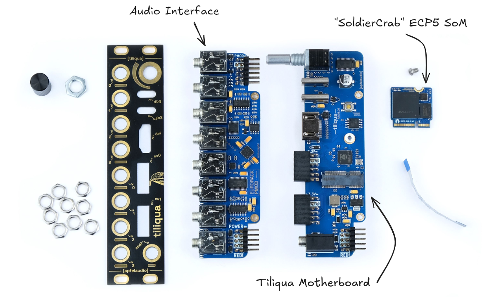

Hardware details
{kind=link}
Audio Interface
KiCAD files + schematics here: eurorack-pmod R3.3 hardware
8 (4 in + 4 out) DC-coupled audio channels, 192 KHz / 24-bit sampling supported
Touch and proximity sensing on all 8 audio jacks (if unused)
PWM-controlled, user-programmable red/green LEDs on each audio channel
Jack insertion detection on all 8 jacks
Motherboard
KiCAD files + schematics here: Tiliqua R2 motherboard
Switched rotary encoder with bar graph display.
- Dual USB ports:
dbg: Included RP2040-based JTAG debugger supported by openFPGAloader
usb2: USB PHY connected directly to FPGA for high-speed USB Audio support
Display output for video synthesis (maximum resolution 720/60P)
2x expansion ports for up to 24 simultaneous audio channels (PMOD-compatible)
MIDI-In jack (TRS-A standard)
Embedded FPGA SoM (soldiercrab)
Schematics here : SoldierCrab R2
Note
SoldierCrab KiCAD files need some cleanup and will be published before the CrowdSupply campaign is launched.
Lattice ECP5 (25 K) FPGA, supported by open-source FPGA toolchains
256 Mbit (32 MByte) HyperRAM / oSPI RAM (for long audio buffers or video framebuffers)
128 Mbit (16 MByte) SPI flash for user bitstreams
High-speed USB HS PHY (ULPI)